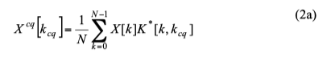
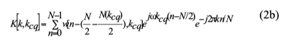
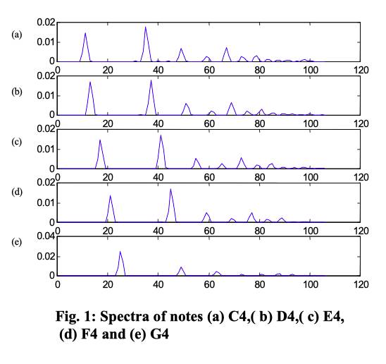
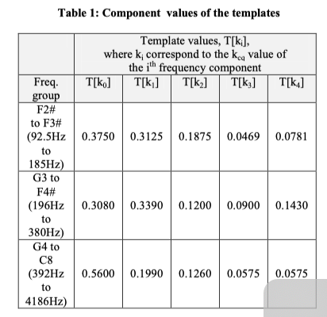
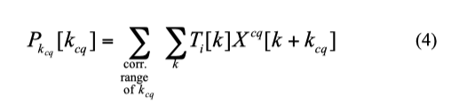
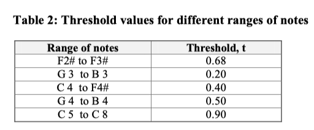
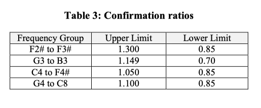
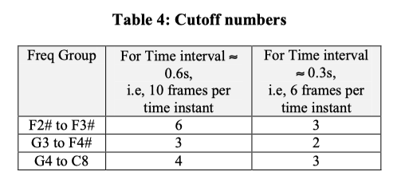

×
I developed an algorithm for automatic recognition of musical notes from piano audio signals. The system digitally samples piano audio, transforms it from the time domain to the frequency domain using the Constant Q Transform, and applies template matching with statistical processing to identify individual notes with high accuracy.
I tested the algorithm on both electronically synthesised music and real piano performances. The system achieved perfect recognition on synthesised pieces and high accuracy on real-world piano recordings — demonstrating the robustness of the signal processing pipeline I built.
100% accuracy on synthesised input; high accuracy on live piano performances with varying dynamics and attack strengths.
I modeled the piano's frequency space using the Equal Tempered scale, where adjacent notes are separated by a constant ratio of 21/12. This corresponds to a 6% frequency separation per semitone — a critical constraint that guided my choice of transform resolution.
Musical notes are periodic complex tones composed of a fundamental frequency and harmonics. My recognition approach is based on identifying these fundamental frequencies within the audio signal.
I implemented the Constant Q Transform (CQT), a spectral analysis technique where the ratio Q = f/δf remains constant across all frequency bins. For semitone resolution, Q = 1/0.059 ≈ 17. This geometric frequency spacing is essential for music — unlike the linear spacing of a standard FFT — because piano notes span from 92.5 Hz (F#2) to 4186 Hz (C8).


I implemented a dual-range CQT system to handle the full piano frequency spectrum efficiently:
At a sampling rate of 22,050 Hz with 4,096-sample frames (~0.2 seconds per frame), I used overlapping analysis windows (3,072 samples overlap) to build statistical confidence in note detection.
I conducted extensive spectral analysis of piano notes across the full keyboard. I discovered that notes close in frequency share similar harmonic decay patterns, which allowed me to group the entire range into three template classes based on spectral similarity.

I also validated that the principle of superposition holds for piano audio — the spectrum of simultaneously played notes closely approximates the sum of individual note spectra, enabling polyphonic detection.

I designed a template matching system that computes dot products between predefined spectral templates and the CQT output for each frame. The algorithm slides the template across all frequency bins — a high dot product value at a specific bin indicates the presence of the corresponding note.

Each template is matched against its corresponding frequency group: T₁ for F#2–F#3, T₂ for G3–F#4, and T₃ for G4–C8.
I implemented an adaptive threshold system where the cutoff values are computed as fractions of the maximum dot product value per frame. This accounts for dynamic variation — a forte passage produces higher magnitudes than a pianissimo section, and the thresholds scale accordingly.

I addressed a key challenge: harmonics can cause false detections one octave above the actual note. I developed a ratio-based disambiguation method — when two notes one octave apart both exceed threshold, I compute P₁/P₂ and compare against experimentally determined bounds to resolve which note(s) are truly present.

I implemented a temporal consistency filter to eliminate false positives. By analysing consecutive overlapping frames, I applied a persistence rule: only notes that appear continuously for a minimum number of frames are confirmed as valid detections. Sporadic single-frame detections are discarded as noise artifacts.
